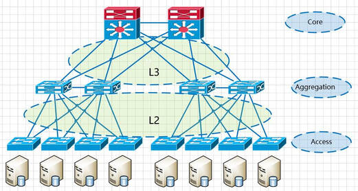

网络基础
三层网络架构，接入交换机、汇聚交换机和核心交换机
核心层（网络的高速交换主干）、汇聚层（提供基于策略的连接）、接入层（直接连接终端）
-
核心层：核心层是网络的高速交换主干，对整个网络的连通起到至关重要的作用。核心层应该具有如下几个特性：可靠性、高效性、冗余性、容错性、可管理性、适应性、低延时性等。因为核心层是网络的枢纽中心，重要性突出。核心层设备采用
双机冗余热备份是非常必要的，也可以使用负载均衡功能，来改善网络性能。 -
汇聚层：汇聚层是网络接入层和核心层的“中介”，就是在有线终端接入核心层前先做汇聚，以减轻核心层设备的负荷。汇聚层必须能够处理来自接入层设备的所有通信量，并提供到核心层的上行链路，因此汇聚层交换机与接入层交换机比较，需要更高的性能，更少的接口和更高的交换速率。在汇聚层中，应该采用支持
三层交换技术和VLAN的交换机，以达到网络隔离和分段的目的。 -
接入层：通常将网络中直接面向用户连接或访问网络的部分称为接入层，接入层目的是允许终端用户连接到网络，因此接入层交换机具有低成本和高端口密度特性。我们在接入层设计上主张使用性能价格比高的设备。接入层是最终用户与网络的接口，它应该提供即插即用的特性，同时应该非常易于使用和维护。一般POE交换机是直接接终端供电，所以POE交换机是作为接入层交换机。

数据报的名称 和 层级 对应
- 传输层 - segment
- 网络层 - packet
- 链路层 - frame
交换机
二层设备
CAM表（内容可寻址存储器），每条记录包含 接口、主机、MAC、VLAN、老化计时器（Aging Timer）（300秒倒计时，或者交换机接口DOWN掉）
cisco 操作系统： IOS
老IOS / Unix / 12.4 就不再升版本了
IOS XE / Linux / 15.1
IOS XR / Linux / 7.x
NX-OS Nexus / Linux / 7.x
huawei 操作系统： VRP
VRP 5 ： 目前主流普通型号
VRP 8 ： 给运营商等的高级型号
cisco 模拟器
PNETLab
添加交换机/路由器 ： 添加 IOL
-
?命令提示符
?命令，列出当前模式的所有可用命令
命令x ?显示命令x的帮助 -
模式
权限级别 0-15
用户模式 ，最低配置级别 - 1级，提示符： >
特权模式（15级）
enable 获取高权限
提示符： #
write 写入当前运行配置，到启动模式。
show privilege 显示当前权限级别
configure terminal 进入全局配置模式，提示符： (config)#
interface ethernet 0/0 配置接口 0/0，进入局部配置模式，提示符： (config-if)#
ip address 12.1.1.1 255.255.255.0 为接口配置IP
no shutdown 开启路由器接口
hostname 新的主机名
exit 回到上一级模式 / Ctrl + Z 立即回退到用户模式
ip interface brief 显示当前接口信息
show arp 显示arp表
huawei 模拟器
eNSP
<Huawei> user view 用户视图
可以使用display命令查看运行状态
相当于：cisco的特权模式
system-view 进入配置模式
提示符： [Huawei]
相当于：cisco的全局配置模式
interface GigabitEthernet 0/0/0 配置接口 0/0/0 ，进入局部配置模式
接口默认开启，不用 undo shutdown
ip address 12.1.1.1 255.255.255.0 为接口配置IP
display this 显示当前接口状态
sysname 新的主机名
quit 回到上一级模式 / Ctrl + Z 立即回退到用户模式
display ip interface brief 显示当前接口信息
display current-configuration 查看当前的配置
RFC1918 公有地址和私有地址
公有地址 ISP DC 使用
私有地址：
10.0.0.0/8
172.16.0.0/16 - 172.31.0.0/16
192.168.0.0/24 - 192.168.255.0/24
VLSM(可变长子网掩码)
Variable Length Subnet Mask (VLSM)
VLSM (Variable Length Subnet Mask) is a technique that allows network administrators to divide an IP address space into subnets of different sizes, rather than dividing it into subnets of the same size.
无类别域间路由（Classless Inter-Domain Routing、CIDR）
无类别域间路由是基于可变长子网掩码（VLSM)来进行任意长度的前缀的分配的。在RFC 950（1985）中有关于可变长子网掩码的说明。CIDR包括：指定任意长度的前缀的可变长子网掩码技术。遵从CIDR规则的地址有一个后缀说明前缀的位数，例如 192.168.0.0/16。
CIDR主要是一个按位的、基于前缀的，用于解释IP地址的标准。